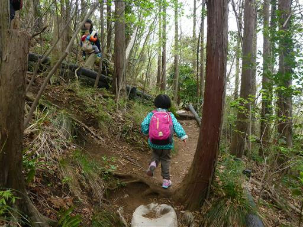
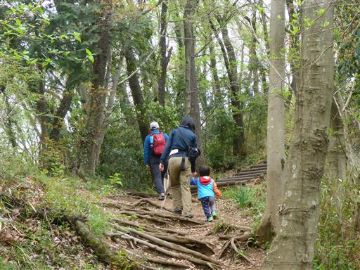
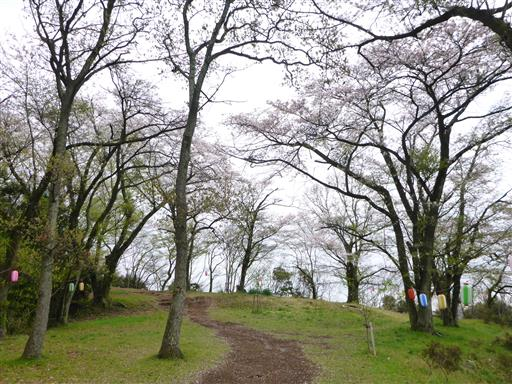
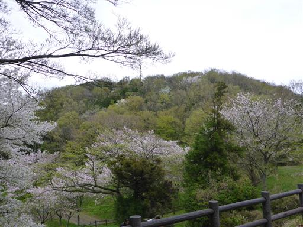
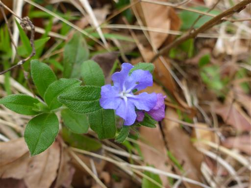
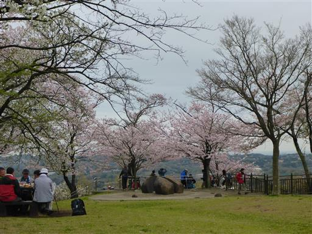
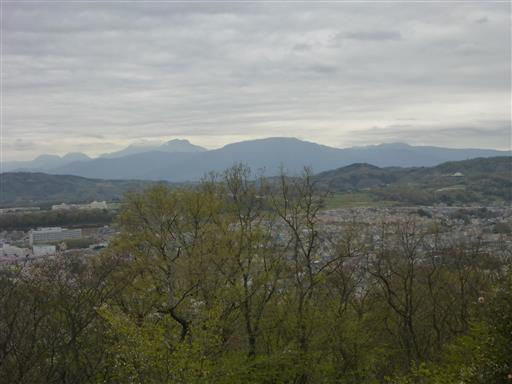
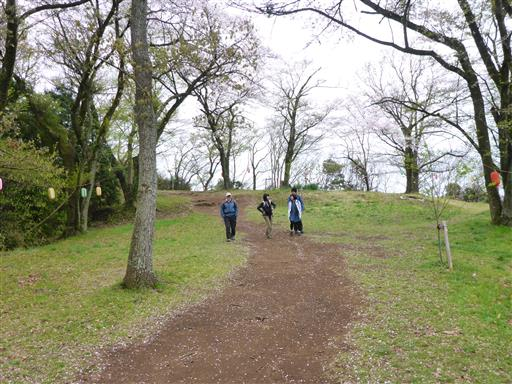

弘法山
| 日付 | 2015年4月4日（土） |
|---|---|
| 山域 | 丹沢 |
| メンバー | グループ（男3女2子供2） |
| 山行形態 | 子連れ日帰り |
| アクセス | 電車 |
| ルート (Map) | 秦野駅 - 権現山 - 秦野駅 |
今年も友人と弘法山に花見に行く。
毎年恒例の弘法山花見だが、2年連続雨で流れて、3年ぶりの開催だ。
今年も天気が悪く朝から雨が降っていたが、午後から持ち直すとの予報を信じて開催する。
電車の中では小雨が降ったり止んだりだったが、
歩き初めには何とか止んでくれた。歩き慣れた道を登って行く。

最初は抱っこひもの中にいた息子も、途中から歩き始める。

急な階段を登りきると緩やかになり桜が現れる。
今年は急に暖かくなって開花が一気に進んだため、桜が散ってしまうかと心配したが、
幸いまだ多くの木が花をつけている。

桜と新緑が美しい。もう少し日差しがあればもっときれいなのだが、贅沢は言えない。

道端にホタルカズラの花が咲いている。

権現山に到着する。ここはいつ来ても人ごみがなく快適だ。

桜は満開。持ち寄った酒で宴会を始める。
子供たちは食事を早々に終えたら、広々とした山頂で適当に遊んでいる。

晴れ間は出ないが少し明るくなってきた。
もう雨が降ることはなさそうだ。遠くに箱根の山が見えている。

2時間ほどで撤収する。
風が強く少々肌寒かったが、久々に開催できたお花見山行だった。

他の山行記録